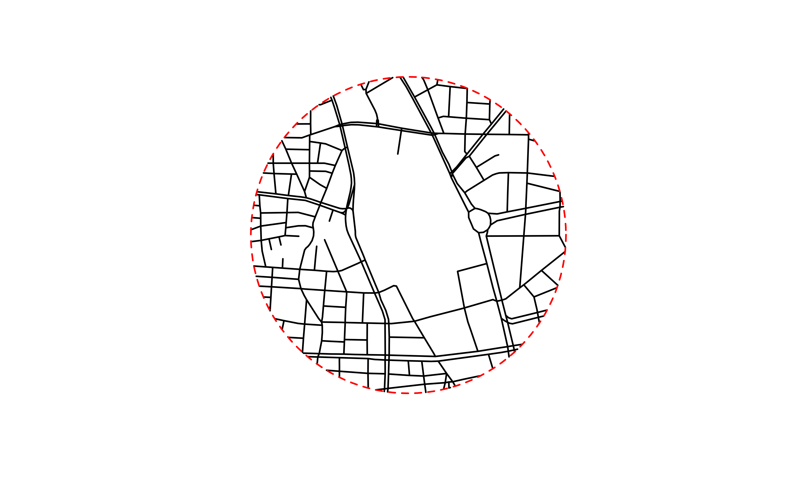

Fetching Road Data with `fetch_roads()`
Source:vignettes/using-fetch-roads.Rmd
using-fetch-roads.RmdThis vignette demonstrates how to use the fetch_roads()
function to download road data from OpenStreetMap (OSM). You can fetch
data for a specific area using either a bounding box or a center point
with a radius, and optionally crop the data to the precise
boundaries.
Fetching by bounding box
This example is to specify a rectangular area using a bounding box.
By default, fetch_roads() returns all roads that intersect
the box. Setting crop = TRUE will trim the to the box’s
boundaries.
# Define a bounding box (e.g., around Sakae area, Japan)
sakae_bbox <- create_bbox(north = 35.17377,
south = 35.16377,
east = 136.91590,
west = 136.90090)
# 1. Fetch roads without cropping (default)
roads_default <- fetch_roads(sakae_bbox)
plot(roads_default$geometry, lwd = 2)
plot(convert_bbox_to_polygon(sakae_bbox), add = TRUE, border = "red", lty = 2, lwd = 2)
# 2. Fetch roads with cropping
roads_cropped <- fetch_roads(sakae_bbox, crop = TRUE)
plot(roads_cropped$geometry, lwd = 2)
plot(convert_bbox_to_polygon(sakae_bbox), add = TRUE, border = "red", lty = 2, lwd = 2)
As shown in the plots, crop = TRUE trims the road
geometries precisely to the red-dashed boundary.
Fetching by center point and radius
You can specify a center point (longitude and latitude) and a search
radius in meters. To get roads trimmed to the circular area, you must
set both crop = TRUE and
cricle_crop = TRUE
# Define a center point (Nagoya Station) and radius
center_lon <- 136.8817
center_lat <- 35.1709
radius_m <- 500
# Fetch and crop roads to a circular area
roads_circle_cropped <- fetch_roads(x = center_lon,
y = center_lat,
radius = radius_m,
crop = TRUE,
circle_crop = TRUE)
# Plot the result
plot(roads_circle_cropped$geometry, lwd = 2)
# Draw the circle boundary for visualization
center_pt <- create_points(center_lon, center_lat, crs = 4326)
circle_poly <- st_buffer(transform_to_cartesian(center_pt), radius_m)
plot(transform_to_geographic(circle_poly), add = TRUE, border = "red", lty = 2, lwd = 2)
The plot shows that the road network is perfectly contained within the specified circular boundary.